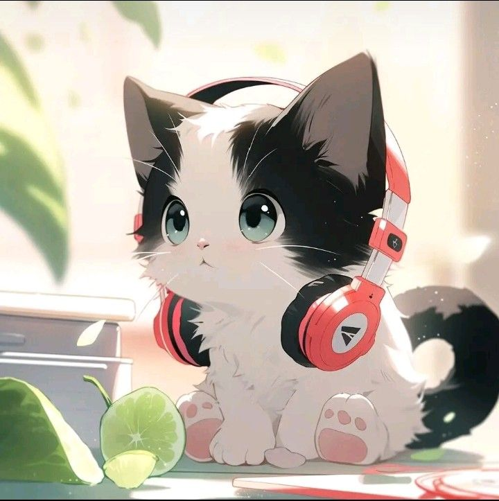

Im A hitaku, I absolutely facinated by anime. I majorly watch romance and Iskais, but trust me Romance is the most common one. I read manga, manhwas and anime audio books. Ofc, im very secretive, actively not acknowledgeing and even disregarding it. But I do in fact love it, hence my art style. The only real action I think I watched was One Punch Man and Dr Stone????
I love making art, especially when it comes to NSFW. Not necessarily saying im good at it but certainly want to be. Inspired by Anime and my previous passions, I want to pursue art in both traditional and digital format, Including modeling too.
I fully support the furry community, A bit less on the homosexual side but still support it. I am on the cat person side so ye.
Im Demi-sexual, Asexual and Bisexual (But like 99% girls) all at the same time. Perhaps a bit hypersexual but thats speculation. I additonally a melacholic but thats a bit too in depth to talk about.
I had like two crushes (Boy/girl) throughout my whole school, one I can't really say but the other one was Mia Swanto. It wasn't really strong though since I left her from my own mental health.
I hate people who are very obvious with what they like. Additonally people who are very easy to read. As a small note, I hate not expressing myself (my pain and shared experience).
I am invested with FNF and the Digital circus community, not like hyper but actively support.
Personally, I do really seek a girl/boyfriend in the future but in a way where I don't really care being left or not obtaining one (Because it contradicts my Number 9).
Due to my depleting mental health, I created an internal philosophy which defines 7 pains a human can inhibit. Disparturement, Unobtainability, Dispair, Tortured, Emotioniful, Mishaps and Injured. Amplified by Fear, Overthinking and Lifestyle. What I hate the most is Dispair, mishaps and injured. Ask me more about this if you want.